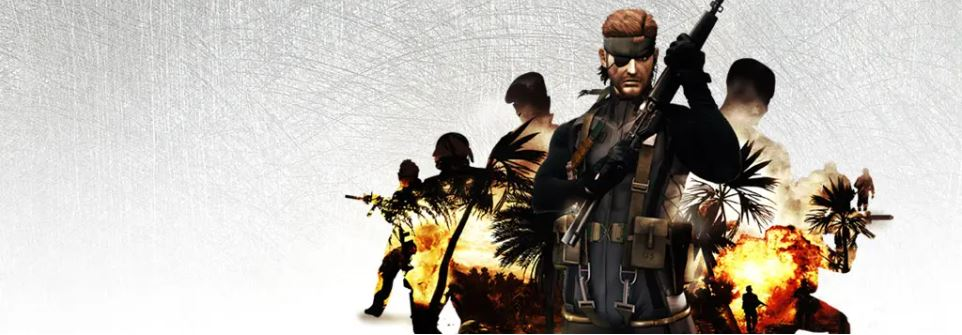

Metal Gear Solid is a series of techno-thriller stealth games, created by Hideo Kojima. The game was published by Konami in 1987, with the name “Metal Gear”. You play as the main character, Solid Snake, who’s assigned to take down a titular superweapon known as “Metal Gear”. Later on, more games were released on different platforms, through different generations.
Operation Snake Eater was first introduced in Metal Gear Solid 3: Snake Eater, which was released in 2004 on the Playstation 2. Later on the same story was used in Metal Gear Solid 3: Subsistence: HD Collection. Operation Snake Eater introduced us to John, also known as Naked Snake by his code name. Naked Snake was sent to infiltrate the Soviet Union to stop a new weapon named “The Shagohod”. Later on he obtained the name “Big Boss”, by killing “Boss”, which she is known as “Mother of Special Forces” because of her special place as a soldier. She is also considered as Naked Snake’s mentor.
The San Hieronymo Incident was introduced in Metal Gear Solid: Portable Ops, released in 2006 for psp. Although the game wasn’t written by Hideo Kojima, it's important for the story. In this game, Big Boss cuts his ties with the U. S. government and takes his first steps to make an independent military group called Foxhound. Big Boss' main mission was to destroy RAXA, which was later revealed to just be a test model for Metal Gear. Later on, Big Boss finds the actual Metal Gear, and destroys it, which completes his mission.

Metal Gear Solid: Peace Walker was released in 2010 on the Playstation Portable. During the Peace Walker, Big Boss completely split from the U. S. government, which gives him more freedom. In 1974, Big Boss and his military group named Militaires Sans Frontieres (MSF) were hired to liberate Costa Rica from occupancy and destroy a new type of Metal Gear called Peace Walker. During the mission, Paz Ortega was rescued by Big Boss and Kazuhira Miller, which is considered to be Big Boss’s right-hand and friend. After this mission, Big Boss was able to expand MSF and rename it to Outer Heaven.
Metal Gear Solid V: Ground Zeroes acts as a prologue to Metal Gear Solid V: The Phantom Pain. THis game was released in 2014 on PS3, PS4, Xbox 360, Xbox One, and PC. During the Ground Zeroes Incident, Big Boss is hired to infiltrate a U. S. Army Base in Cuba. Multiple characters from Peace Walker return in this game, Kazuhira Miller and Paz Ortega. Skull Face, the leader of XOF, is introduced in this game. His goal is to get information about Zero from Paz, because she is the only Cipher agen who met Zero face-to-face. Skull's goal is to liberate himself from Cipher, that’s why he decided to hold Paz as a hostage and inserts two bomb inside her. Big Boss receives an SOS signal, then he proceeds with his mission to rescue Paz, Big Boss’s medic extract the bomb from Paz’s stomach. After completing the mission successfully, they return to Mother Base but they discover it’s under attack by XOF forces. Mother Base collapses and the only survivors are Big Boss, Miller, and the medic. On the rescue helicopter Paz reveals that she has another explosive in her body; she jumps out the helicopter in order to save everyone. Unfortunately, XOF chopper collides with the rescue chopper which causes Big Boss to enter a coma.
Metal Gear Solid V: The Phantom Pain was released in 2015 for PS3, PS4, Xbox One, Xbox 360, and PC. In this game, the player plays as Venom Snake, but won’t know that until the end of the game. Although the player believes it’s Big Boss throughout the game, but actually playing as the medic during the Ground Zeroes incident. The medic goes through hypnotherapy and plastic surgery, which makes him believe that he is Big Boss. During the game, Diamond Dogs is established to take revenge from XOF and eliminate a new Metal Gear. Meanwhile, the real Big Boss is rebuilding Outer Heaven.
The Outer Heaven Uprising takes place in the original Metal Gear, which was first released in 1987 for the MSX2. During the Outer Heaven Uprising, we are introduced to a new unique soldier named Solid Snake. He is sent to infiltrate the nation of Outer Heaven and take out the Metal Gear they have. Eventually he takes out the leader of Outer Heaven, Big Boss. It wasn’t clear whether it was Big Boss, until The Phantom Pain which revealed it was Venom Snake.
Metal Gear Solid 2: Solid Snake was first released in 1990 for the MSX2. In this game, Solid Snake must once again infiltrate a hostile nation, this time in Zanzibar Land. He destroyed another Metal Gear, named Metal Gear D. Once again, Solid Snake takes out Big Boss - The real one this time.
Shadow Moses Incident was first introduced in Metal Gear Solid, which was released in 1998 on PS1 and later on PC. In 2005, Solid Snake infiltrated Shadow Moses Island. He was sent to stop the nuclear disposal facility occupied by FOXHOUND. He meets his twin brother and the leader of FOXHOUND, Liquid Snake. Throughout the mission, he discovers that FOXHOUND conquered Metal Gear REX. He completes his mission by eliminating Metal Gear REX and Liquid Snake.
The Tanker Incident (2007) and Big Shell Incident (2009) make up the story of Metal Gear Solid 3: Sons of Liberty, which was originally released in 2001 on PS2. Solid Snake is sent to confirm that Metal Gear RAY is being transported by the US on a tanker. Snake’s mission is to take images of the new Metal Gear RAY. A US drone appears in the sky and photographs Solid Snake, who is now in the position of being a traitor to the US. Unfortunately, Ocelot triggers explosives that were planted on the tanker and runs away with Metal Gear RAY. Solid Snake is accused of stealing Metal Gear RAY and is forced to hide.
Two years later, during the incident, Raiden is called into action to infiltrate the facility called “Big Shell '' in the New York Harbor. A group known as the Sons Of Liberty terrorist group is led by Solidus Snake, has taken the presdient as a hostage and captured the scret warship Arsenal Gear. During the mission, Raiden is being helped by a man named Iroquois Pliskin, who is later revealed to be Solid Snake. With Solid Snake’s help, Raiden is able to defeat Solidus Snake and stop Arsenal Gear. Unfortunately, the ship crashes into New York causing a lot of damage.
The Guns of the Patriots incident was featured in Metal Gear Solid 4:Guns of the Patriots, which was released for the PS3. In 2014, Liquid Ocelot, a fusion between Liquid Snake and Ocelot’s personalities, engulfs the world in constant conflict through various Private Military Companies. Solid Snake is now called Old Snake because of him aging quickly, and turning gray. Old Snake started aging quickly because he is a clone of Big Boss. Old Snake is sent out to eliminate Liquid Ocelot. Snake and Raiden also manage to destroy The Patriots, a secret group that tries to control the world from behind the scenes. After completing the mission Snake visits Big Boss’ grave, with only one year to live, he decides to commit suicide. Before pulling the trigger. Big Boss appears from a distance approaching Old Snake while pushing someone on a chair. Big Boss explains that he was brought up to life by using Solidus Snake’s body, which is the perfect clone of Big Boss. He keeps on explaining how Major Zero led the AI to take over the Patriots, which led the world to be dependent on a war economy. Big Boss eventually closes the oxygen supply that keeps Major Zero Alive. Snake and Big Boss reconcile, after which Big Boss dies in his arms.